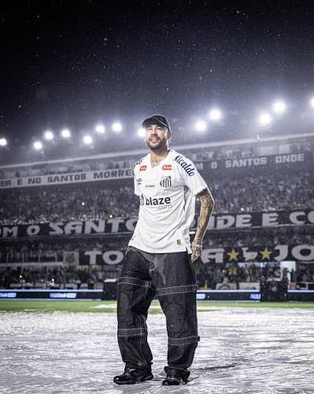
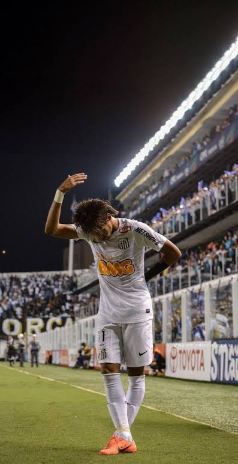

NEYMAR JR.
Desktop: (> 1280px)
Tablet: (> 800px)
Mobile: (< 800px)


Neymar Jr. es un futbolista brasileño reconocido por su habilidad, velocidad, regate y creatividad dentro del campo. A lo largo de su carrera ha jugado en diferentes clubes y ha representado a Brasil en competiciones internacionales.